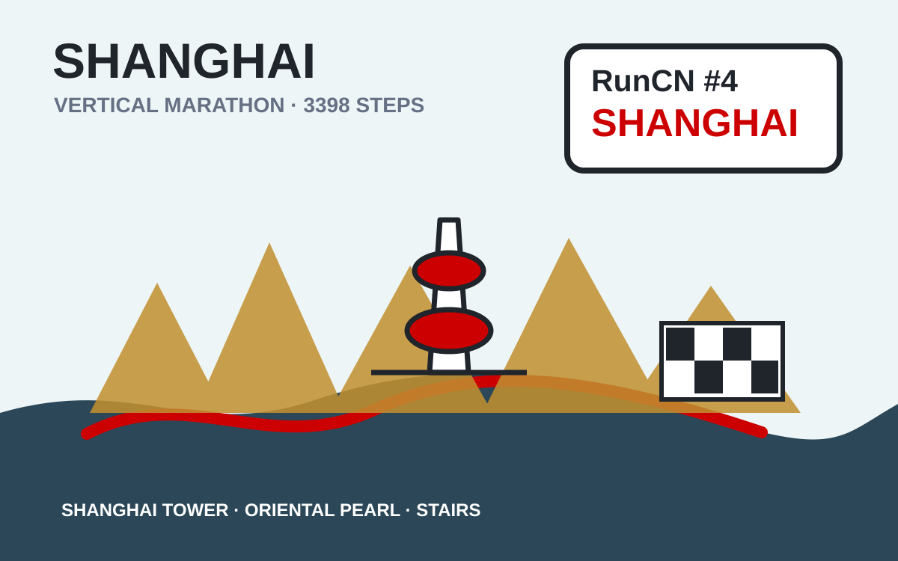

Run50 / U.S. States
Run50 U.S. State Stories
Start with State 1 and follow the project in order. Revisit races sit beside their original state.
World / USA / Marathon
Kentucky gave me my first marathon in North America
Race date: November 8, 2020. A socially distanced Louisville Marathon moved into Beckley Creek Park, with staggered starts, a quiet forest course, and a hard final 12 kilometers.
World / USA / Marathon
Louisville turned Derby season into the city's biggest running party
Race date: April 29, 2023. A hometown Derby-season marathon in Louisville, with horse-racing energy, city streets, friends, and one more Kentucky chapter.
World / USA / Marathon
Cleveland gave me a cold 26.2-mile run from night into daylight
Race date: October 24, 2021. State 2 of Run50 started in the dark near Tower City, crossed Lake Erie light and industrial bridges, and ended with a medal that looked exactly like Cleveland felt.
World / USA / Marathon
Cincinnati's Flying Pig turned into a Flying Fish in the rain
Race date: May 7, 2023. Cincinnati's Flying Pig Marathon brought bridges, hills, rain and a full Queen City tour.
World / USA / Marathon
New York turned 26.2 miles into one enormous five-borough street party
Race date: November 7, 2021. State 3 of Run50 and my first World Marathon Major: Staten Island, the Verrazzano Bridge, Brooklyn, Queens, Manhattan, and Central Park.
World / USA / Marathon
San Francisco turned 26.2 miles into fog, bridge wind, hills and bay light
Race date: July 24, 2022. State 4 of Run50 crossed the Golden Gate Bridge, ran through fog and sudden sun, and ended with a medal beside the bay.
World / USA / Marathon
Indianapolis turned a rainy one-day marathon into a way back to running
Race date: November 5, 2022. Run50 State 5 at the 15th Indianapolis Monumental Marathon: autumn rain, Monument Circle, run-walk intervals, and a 4:55:12 finish.
World / USA / Marathon
Honolulu made a first marathon feel like an all-day island celebration
Race date: December 11, 2022. State 6 of Run50 at the 50th Honolulu Marathon: fireworks, Waikiki, Diamond Head, no cutoff, and 47's first marathon finish.
World / USA / Marathon
Atlanta made 26.2 miles feel like an Olympic city walk
Race date: February 26, 2023. State 7 of Run50 in Atlanta: Olympic rings, Coca-Cola, CNN, hills, and a long road-trip weekend.
World / USA / Marathon
Denver gave me 26.2 Mile High miles, stadium grass and mountain light
Race date: May 21, 2023. State 8 of Run50 in Denver: Colfax, stadium grass, mountain light and Mile High air.
World / USA / Marathon
Alaska had no aurora, but Anchorage still gave me a wild 26.2 miles
Race date: June 17, 2023. State 9 of Run50 in Anchorage: no aurora, but Alaska mountains, coastal trails and summer-solstice light.
World / USA / Marathon
St. Joseph made Missouri feel like a first-edition marathon road trip
Race date: September 23, 2023. State 10 of Run50 at the inaugural St. Joseph Missouri Marathon: parkways, heat, hills and a wedding weekend.
World / USA / Marathon
Chicago gave me my second World Marathon Major and State 11 of Run50
Race date: October 8, 2023. The 45th Chicago Marathon: Grant Park, the L, Chinatown, roaring crowds, Kelvin Kiptum's world record day, and a second finish beside Siqi.
World / USA / Marathon
Scorching October sun gave me my slowest marathon of the year in Music City
Race date: October 28, 2023. Running U.S. State 12 at Nashville, TN. A hot city greenway run with a minor league baseball stadium finish, crossing the Cumberland River, and surviving a PW.
World / USA / Marathon
West Virginia gave me a touchdown stadium finish to break 4 hours
Race date: November 5, 2023. Running U.S. State 13 at Marshall University in Huntington, WV. A beautiful autumn loop race with a football stadium finish, placing a flower on the 1970 team plane crash memorial, and a PR.
World / USA / Marathon
San Antonio turned a Spurs trip into my Texas marathon story
Race date: December 3, 2023. State 14 of Run50, from the Alamo and River Walk to Fort Sam Houston, greenway miles, one late Texas hill and a 4:12 finish.
World / USA / Marathon
Miami gave me a wild 26.2 miles in a CR7 shirt, right in Messi's backyard
Race date: January 28, 2024. A wrong-date plane ticket turned a finished state into an accidental double-run, complete with construction zones, heat-stroke miles, and a Portuguese connection.
World / USA / Marathon
Little Rock gave me a 26.2-mile run with the massive dinosaur medal
Race date: March 3, 2024. A Southern weekend road trip down to Arkansas for the legendary dinosaur medal, looping the aviation giants and wooded forest parks.
World / USA / Marathon
Too Slow for Boston gave me a 26.2-mile run with the stubborn mule medal
Race date: April 14, 2024. A neighborhood loop road race designed for those who can't qualify for Boston—featuring trailer RV camping, a clicker lap-counting system, and a trophy for the slowest.
RunCN / China
RunCN China Stories
China race weekends gathered in one place for cleaner sharing.
World / China / Marathon
Xiangyang gave me a marathon with a finish I did not see coming
Race date: October 19, 2025. A Three Kingdoms city, the Han River, old city walls, Tang-style palaces and an unexpected 3:57 finish.
World / China / Marathon
Guilin turned a beautiful marathon into a full-sun test
Race date: November 16, 2025. Li River views, karst hills, spray trucks, a Messi jersey chase, and my family waiting at the finish.
World / China / Marathon
Hong Kong turned a marathon into a tunnel-and-bridge city tour
Race date: November 23, 2025. A 5 a.m. start, expressway tunnels, Victoria Harbour wind, Tseung Kwan O Bridge, and one last uphill punch.
World / China / Vertical Marathon
Climbing 3,398 steps to the top of China's tallest skyscraper
Race date: November 24, 2019. Scaling 119 floors and 3,398 steps of the Shanghai Tower to reach 632m height during a stressful visa waiting period.

RunWorld / Global
RunWorld Stories
International marathon stories beyond the U.S. and China.
World / Mexico / Marathon
Mexico City gave me a 26.2-mile high-altitude plateau challenge
Race date: August 31, 2025. 2,240m altitude down Reforma to the Zócalo, followed by sun-drenched pyramids and a ride home with a carful of friendly locals.
World / Italy / Marathon
Pisa turned a marathon into a Tuscan art-school road trip
Race date: December 21, 2025. The Leaning Tower, Arno River, Tuscan villages, Ligurian Sea, and an Italy trip through Venice, Milan, Florence and Rome.
Run50
Run50 / State Challenge
North Carolina State 16 and the merged Florida State 15 story across Key West, Orlando, and Disney Marathon.
Run50 / Longform
Oak Island sent Run50 toward the Atlantic with a medal bigger than my face
A North Carolina coast marathon with winter legs, ocean wind, Atlantic light, and a medal that refused to be subtle.
Run50 / Longform
A Florida week from Key West beaches to Disney Marathon
Run50 State 15 as one Florida arc: Key West New Year, Orlando speedrun, Universal, and Disney Marathon.
RunCN
RunCN / China Marathon Series
Shanghai, Wuhan, Harbin, Wuxi, West Lake, Dalian, Lanzhou, Steel Tank, and other China running stories.
RunCN / Longform
Xiamen gave my 2018 season a rain-soaked, unforgettable opening
A rainy Xiamen Marathon, a Zengcuo'an reunion, and the first full-marathon chapter of 2018.
RunCN / Longform
A West Lake half marathon turned into a lakeside reset and an unexpected encounter
West Lake, Qingzhiwu, Westlake University, and a half marathon that helped me restart.
RunCN / Longform
A delayed Wuhan graduation album became a time capsule
Wuhan University graduation, family visiting Wuhan, East Lake, and a photo album that arrived two years late.
RunCN / Longform
Lanzhou Strong: a marathon at the edge of the Yellow River and the Hexi dream
The Yellow River, beef noodles, Zhongshan Bridge, Gaolan Mountain, and a Lanzhou Marathon with roaring local energy.
RunCN / Longform
Haikou became an unfinished running story by the sea
Haikou arcades, Hainan sea wind, an unfinished race, and a city story still worth keeping.
RunCN / Longform
Wuhan and the Han Marathon became my private memory of leaving home
Han Marathon, Wuhan University, River City, pre-graduation homesickness, and a private Wuhan memory.
RunCN / Longform
Dalian turned my first real trail race into a Northeastern coming-of-age story
Dalian's west coast, the Yellow Sea and Bohai Sea divide, a trail race, and a hill story for the Northeast.
RunCN / Longform
Wuhan Marathon connected a century of city fire and running energy
1911 memory, East Lake, Han Marathon volunteers, and Wuhan at full volume.
RunCN / Longform
Harbin Marathon brought me back to the black soil and Songhua River
Songhua River, black soil, Northeastern home, and a delayed Harbin Marathon memory.
RunCN / Longform
The steel tank story: how a heavy football kid found marathons
From the steel tank on the football field to a proud son at the Harbin Marathon finish.
RunCN / Longform
Three spring races bloomed under cherry trees in Wuhan and Wuxi
Wuhan, Wuxi, cherry blossoms, a college marathon, and three spring race notes.
RunWorld
RunWorld / Global Marathon Series
Bangkok is RunWorld stop 3, with running stories beyond the U.S. and China.